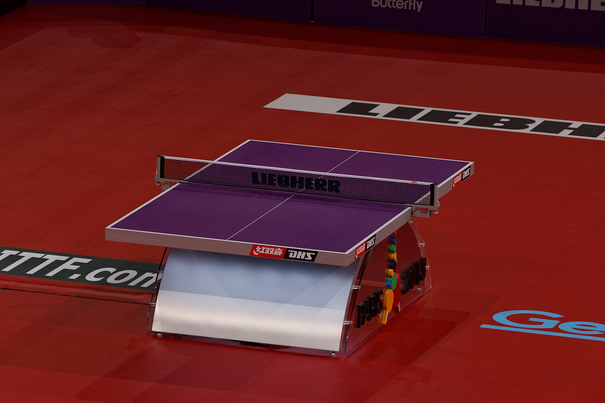

O tênis de mesa parece simples à primeira vista: dois jogadores, uma mesa, uma rede, raquetes e uma bola leve. Mas basta começar uma partida para surgirem as perguntas. O saque precisa ser cruzado? Pode apoiar a mão na mesa? A bola que toca na quina vale? Quantos pontos são necessários para vencer um set?
Apesar de possuir regras detalhadas, a modalidade pode ser compreendida de forma simples.
O objetivo do jogo
É fazer a bola tocar a parte superior da mesa adversária sem que o oponente consiga realizar uma devolução válida.
Durante a troca de golpes, chamada de rally, cada jogador deve bater na bola depois que ela quicar uma vez em seu próprio lado. A devolução precisa passar sobre ou ao redor da rede e atingir a superfície superior do campo adversário.
O ponto termina quando um dos jogadores erra o saque, manda a bola para fora, não consegue devolvê-la, deixa a bola quicar duas vezes ou comete alguma infração prevista no regulamento.
Todo rally vale ponto. Portanto, não é necessário estar sacando para pontuar.
Como funciona a pontuação
Cada set é disputado até 11 pontos. Para vencer, porém, é necessário abrir pelo menos dois pontos de vantagem.
Assim, um set pode terminar em 11 a 7, 11 a 9 ou 11 a 3. Caso o placar chegue a 10 a 10, a disputa continua até que alguém abra dois pontos. Alguns resultados possíveis são 12 a 10, 15 a 13 ou 20 a 18 e assim por diante.
Uma partida deve ter um número ímpar de sets. O formato exato depende da competição. Os modelos mais comuns são:
- Melhor de cinco sets: vence quem ganhar três.
- Melhor de sete sets: vence quem ganhar quatro.
A exigência de dois pontos de diferença evita que um set equilibrado seja decidido por apenas uma jogada depois do empate em 10 a 10.
Quem começa sacando
O direito de escolher entre sacar, receber ou começar em determinado lado da mesa é definido por sorteio.
Depois disso, cada jogador realiza dois saques consecutivos. Em seguida, o serviço passa ao adversário, que também saca duas vezes.
Exemplo:
- Jogador A faz dois saques.
- Jogador B faz os dois seguintes.
- Jogador A volta a sacar duas vezes.
A alternância continua até o fim do set. Quando o placar chega a 10 a 10, cada jogador passa a realizar somente um saque por vez.
Os jogadores trocam de lado após cada set. No último set possível da partida, a mudança de lado acontece quando um dos competidores chega a cinco pontos.
O saque válido
É uma das regras mais importantes e também uma das que mais provocam erros em jogos amadores.
Para realizar um serviço válido, o jogador deve seguir esta sequência:
- Colocar a bola parada sobre a palma aberta da mão livre.
- Manter a mão livre imóvel antes do lançamento.
- Lançar a bola quase verticalmente para cima, sem aplicar efeito com a mão.
- Fazer a bola subir pelo menos 16 centímetros após deixar a palma.
- Esperar que ela comece a cair antes de golpeá-la.
- Fazer a bola tocar primeiro o próprio lado da mesa e depois o campo adversário.
A bola deve permanecer acima do nível da mesa e atrás da linha de fundo desde o início do saque até o momento do contato com a raquete. Ela também precisa ficar visível para o recebedor.
Isso significa que o sacador não pode esconder a bola com o braço, o corpo, ou o parceiro de dupla. Depois de lançar a bola, o braço livre deve sair do espaço entre ela e a rede.
O saque precisa ser cruzado
Nas partidas individuais, não. O sacador pode direcionar a bola para qualquer região válida do campo adversário.
Ele pode sacar na diagonal, na paralela, no centro ou próximo das laterais. A única obrigação é fazer a bola tocar primeiro seu próprio campo e depois a parte superior da mesa do oponente.
Nas duplas, a regra muda. O saque deve ser realizado em diagonal, saindo da metade direita do campo do sacador e atingindo a metade direita do campo do recebedor.
A linha central é considerada parte da metade direita. Portanto, um saque que toca essa linha pode ser válido.
Saque na rede
Quando um saque correto toca na rede e depois cai na área válida do adversário, o ponto é interrompido e o serviço deve ser repetido. Essa situação é conhecida como let.
O saque não é considerado erro, e nenhum jogador recebe o ponto. Também não existe um limite específico de repetições: se a bola tocar na rede novamente e cair corretamente, o saque é repetido mais uma vez.
Por outro lado, se a bola tocar na rede e não atingir o campo adversário, o sacador perde o ponto.
Durante uma troca normal, a situação é diferente. Se a bola encostar na rede e cair na mesa do oponente, o rally continua normalmente.
O ganho dos pontos
Um jogador marca quando o adversário:
- Faz um saque irregular.
- Não consegue realizar uma devolução válida.
- Manda a bola diretamente para fora.
- Deixa a bola quicar duas vezes em seu lado.
- Toca na rede durante o rally.
- Move a mesa.
- Encosta a mão livre na superfície de jogo.
- Golpeia a bola fora da ordem correta em uma partida de duplas.
- Obstrui a bola antes que ela toque sua mesa, quando ela ainda está acima ou se deslocando em direção à superfície.
Também há ponto quando a bola enviada pelo adversário passa além da linha de fundo sem tocar a mesa. Nesse caso, não é necessário tentar golpeá-la: basta deixá-la sair.
Apoiar a mão na mesa
A mão livre, que é aquela que não segura a raquete, não pode tocar a superfície superior da mesa enquanto a bola estiver em jogo. Caso isso aconteça, o ponto vai para o adversário.
A mão que segura a raquete pode encostar na mesa sem causar uma falta automática. O corpo também pode tocar a mesa. O problema acontece quando o jogador move a superfície de jogo ou toca na rede.
Em resumo:
- Mão livre sobre a mesa: perde o ponto.
- Mão da raquete sobre a mesa: permitido, desde que a mesa não se mova.
- Corpo encosta na mesa: permitido, desde que não mova a mesa.
- Jogador toca na rede: perde o ponto.
Essa diferença explica por que atletas profissionais às vezes se apoiam rapidamente com a mão da raquete depois de uma jogada curta, sem serem punidos.
Bolinha na quina vale ponto
Sim, desde que a bola toque a superfície superior da mesa.
As linhas brancas e a borda superior fazem parte da área válida. Quando a bola acerta a quina e muda bruscamente de direção, o lance continua sendo legal.
A lateral vertical da mesa, entretanto, não faz parte da superfície de jogo. Se a bola atingir apenas essa região, ela é considerada fora.
Uma forma prática de diferenciar é observar a trajetória:
- Quando a bola toca a borda superior, normalmente muda de direção para cima ou para o lado.
- Quando acerta somente a lateral, tende a seguir para baixo.
Em partidas oficiais, a decisão cabe à arbitragem.
As diferenças para o jogo de duplas
Além do saque cruzado, as duplas possuem uma ordem obrigatória de golpes. Os parceiros não podem rebater livremente como acontece no tênis de quadra.
Imagine uma dupla formada por A e B enfrentando X e Y. Se A sacar para X, a sequência será:
- A saca.
- X devolve.
- B rebate.
- Y devolve.
- A rebate novamente.
A ordem continua dessa maneira até o fim do ponto. Se um jogador golpear a bola na vez do parceiro, a dupla adversária marca.
A posição física dos atletas pode mudar durante a jogada. O que não pode mudar é a sequência de quem deve bater na bola. Por isso, movimentação e comunicação são fundamentais nas partidas de duplas.
Bater na bola ao redor da rede
A bolinha não precisa obrigatoriamente passar por cima da rede.
Em algumas jogadas muito abertas, ela pode passar por fora do suporte e atingir a mesa adversária pela lateral. O golpe será válido desde que a bola toque a superfície superior do campo do oponente.
Esse tipo de lance é raro, mas aparece em partidas de alto nível quando os jogadores são deslocados para longe da mesa.
Medidas oficiais da mesa, rede e bola
Uma mesa oficial possui:
- 2,74 metros de comprimento.
- 1,525 metro de largura.
- 76 centímetros de altura.
A rede fica a 15,25 centímetros acima da superfície.
A bola oficial é feita de material plástico, tem 40 milímetros de diâmetro e pesa 2,7 gramas. Ela deve ser branca ou laranja, com acabamento fosco.
A raquete pode ter diferentes tamanhos, formatos e pesos, mas sua lâmina deve ser plana e rígida. Pelo menos 85% de sua espessura precisa ser composta por madeira natural.
O sistema de aceleração
O sistema de aceleração é uma regra pouco vista em partidas recreativas, criada para impedir que um set se prolongue excessivamente por causa de trocas defensivas.
Ele pode entrar em funcionamento quando o set permanece inacabado após dez minutos, desde que ainda não tenham sido disputados pelo menos 18 pontos. Os dois lados também podem solicitar sua adoção antes desse limite.
Depois da ativação:
- Cada jogador faz apenas um saque por vez.
- Se o recebedor completar 13 devoluções corretas na mesma troca, ele ganha o ponto.
- O sistema permanece em vigor até o fim da partida.
Na prática, a regra pressiona o sacador a atacar e concluir o ponto antes que o adversário alcance a 13ª devolução válida.
As regras essenciais
Para uma partida basta guardar seis princípios:
- O set vai até 11 pontos e exige dois de vantagem.
- Cada jogador faz dois saques, exceto depois do 10 a 10.
- O saque começa com a bola na palma aberta e exige lançamento mínimo de 16 centímetros.
- A bola deve quicar uma vez em cada lado durante o saque.
- Nas trocas, ela deve quicar no campo adversário antes da próxima devolução.
- A mão livre não pode tocar a superfície da mesa durante o ponto.
Com essas regras dominadas, já é possível jogar e acompanhar uma partida sem confusão. Os detalhes técnicos ganham importância em competições, mas a essência do tênis de mesa permanece fácil de compreender: controlar a bola, explorar velocidade e efeito, respeitar a ordem do jogo e obrigar o adversário a errar.
Conhecer as regras é fundamental
Entender as normas do tênis de mesa não serve apenas para saber quando um ponto é válido ou identificar um saque irregular. Esse conhecimento ajuda a perceber a estratégia por trás das jogadas, a importância dos efeitos, a escolha dos golpes e as mudanças de posicionamento durante cada troca de bola.
A mesma lógica vale para outras modalidades. Conhecer as regras do handebol ajuda a compreender o jogo passivo, as exclusões de dois minutos, o contato físico e o tiro de sete metros. Já as regras do futsal explicam a dinâmica das substituições, as faltas acumuladas, os tiros livres e o uso estratégico do goleiro-linha.
Para quem acompanha esportes norte-americanos, entender as regras do futebol americano torna mais simples interpretar as descidas, as jardas, as formas de pontuação e o controle do cronômetro. Cada modalidade tem sua própria lógica, e dominar seus fundamentos permite enxergar muito além do placar: o torcedor passa a compreender decisões, estratégias e detalhes que determinam o resultado.